♥
LISTS OF SALSABILA'S INTERESTS
♥
Aha, Salsabila really loves recording herself!
Wait for her videos down there, watch them.
Foods? Who wouldn't love delicious meals, right?
Salsabila has included a few pictures of her favorite dishes down there.
Salsabila is a big fan of K-pop and music.
Scroll down to see what kind of group and soloists she loves!
RECORDING
♥
Oh my, look who it is,
all of these videos were just Salsabila recording herself!
As you can see here, she has an interest in filming.
Just a light filming, or should we call it as recording?
She just loves recording things to keep them all as memories.
She tends to remember things easily, but she also forget things faster.
That is one of the reason why she always record herself, and all the people around her!
♥
Okay, let's move on to the next thing that she likes.
We neeed to scroll down again, buddies!
FOODS
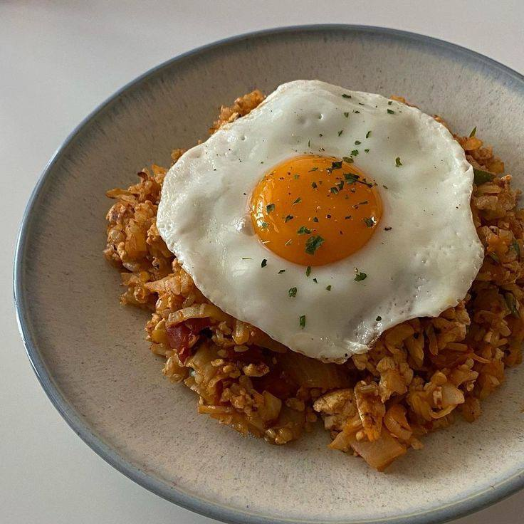 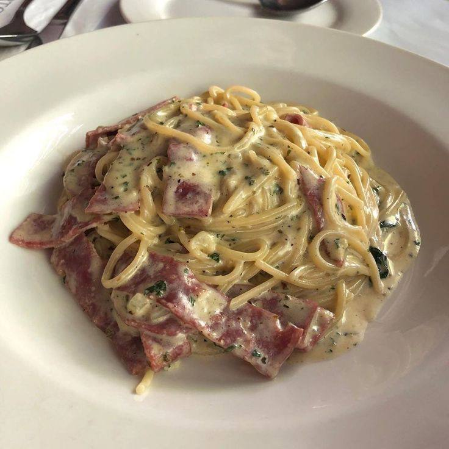 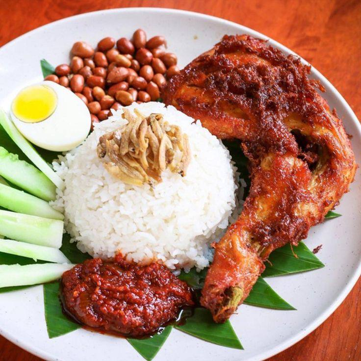 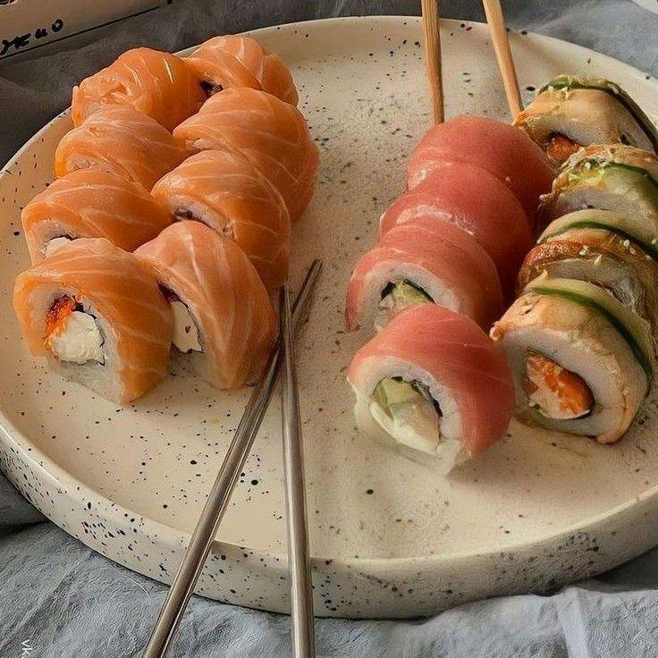 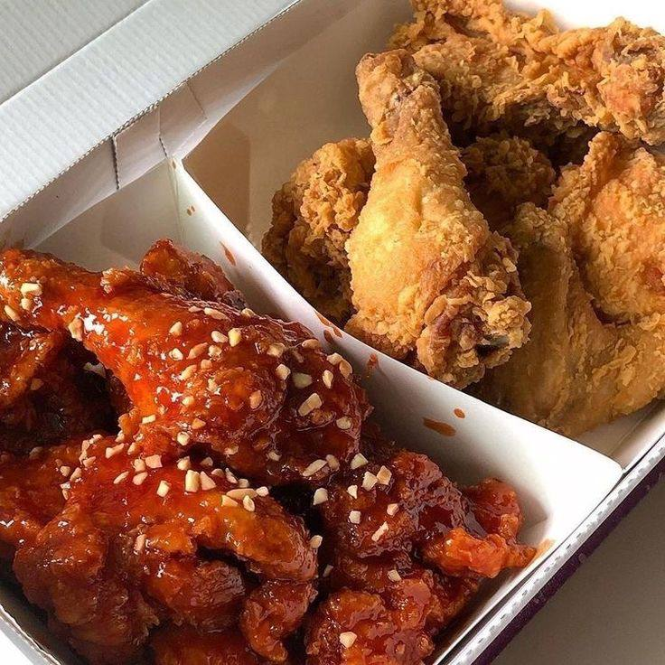 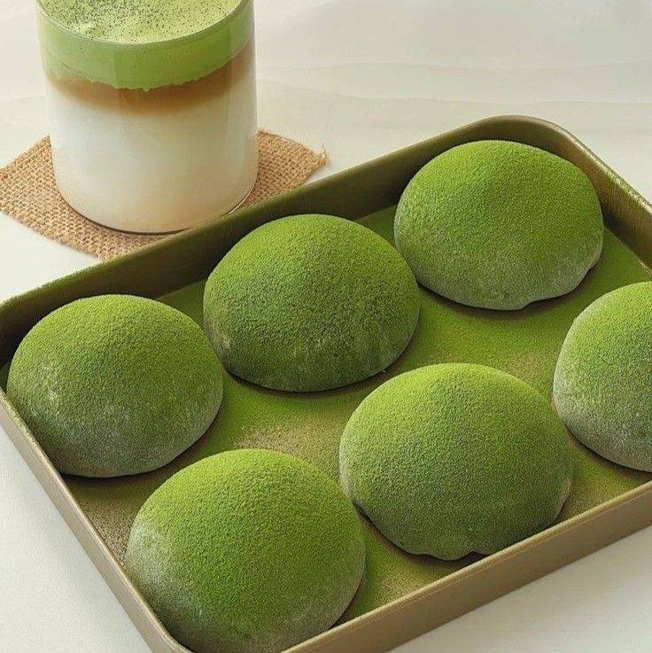 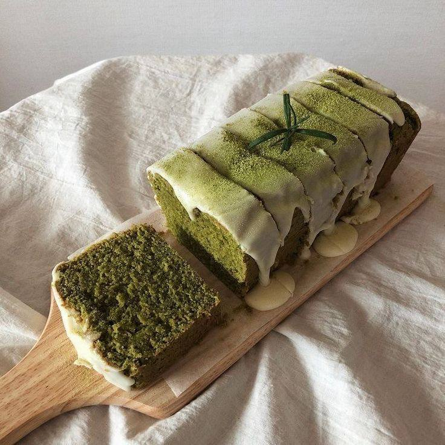 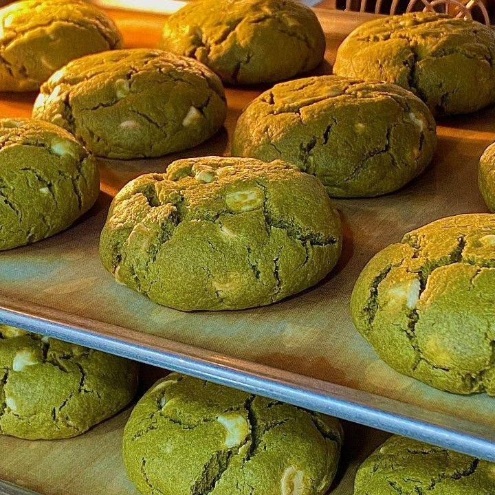♥
Ha, take a look at what those are above,
all of these pictures included Salsabila's favorite dishes!
As you can see on the upper line, she developed a massive love toward
those foods that matches with her type. From fried rice, spaggheti carbonara,
nasi lemak (Malaysian famous dish), and her favorite japanese dish, sushi!
On the second line, starting with her favorite spicy coated fried chicken
even though her spice tolerance is low. For the three green pictures,
They are all foods related to matcha. Salsabila loves matcha!
From mochi, cake, and even matcha cookies, she loves them all!
♥
Okay, that's all for this one.
Let's move on to the next thing that she likes.
Again, gotta scroll down there, buddies!
SOLOISTS/GROUPS
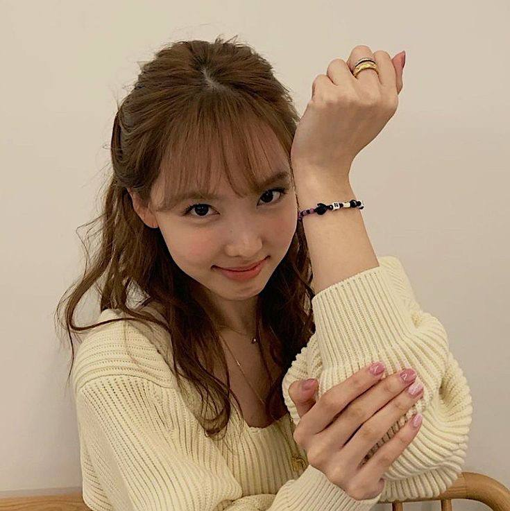 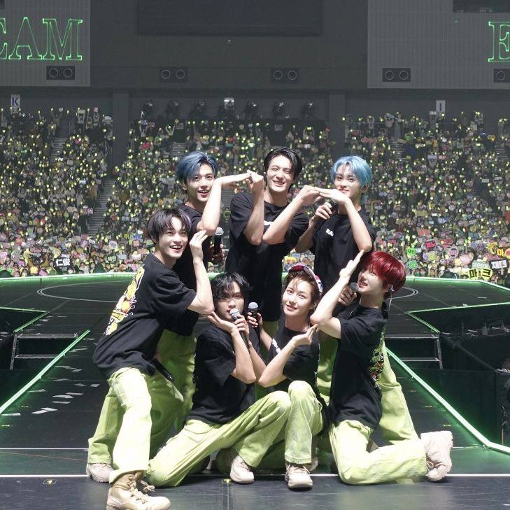 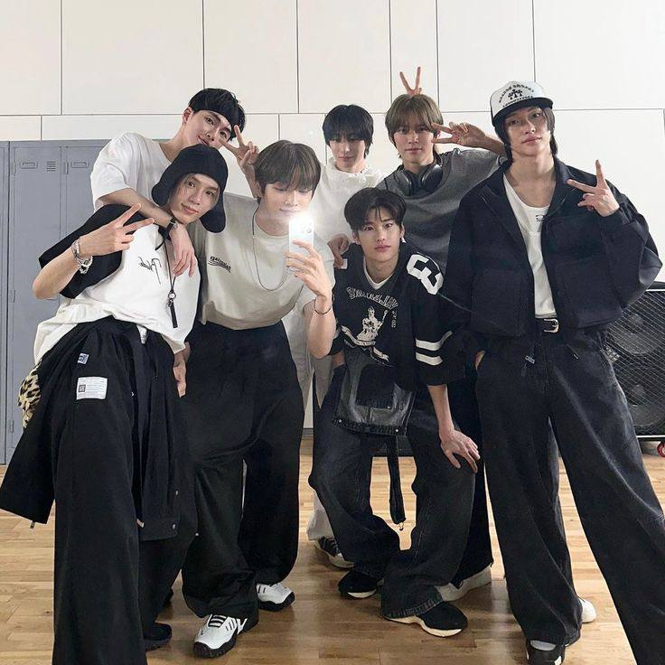 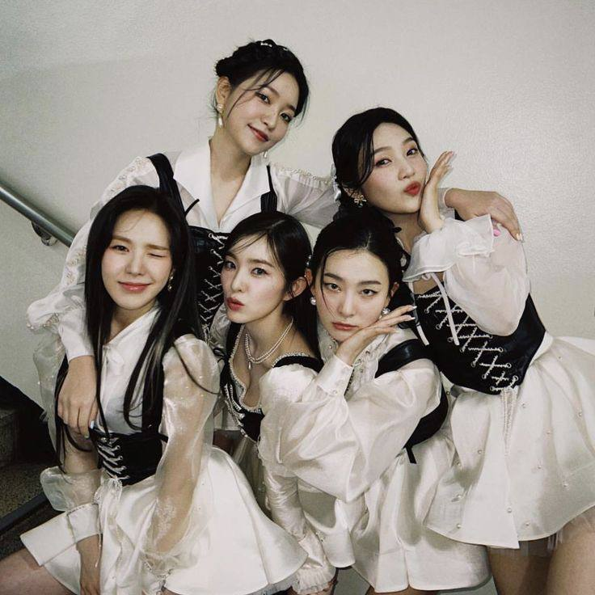♥
Here, presenting Salsabila's favorite soloists and groups,
above are the soloists, below are the groups that she loves!
Okay, starting from the pinky woman, IU, next to her is Jungkook
and her favorite woman in the music industry, Taeyeon. Beside is Nayeon.
She loves all of the soloists mentioned above. Adores them for the good aspects.
On the second line, starting with the boys, NCT DREAM and the girls, AESPA.
Next, it's her new favorite group, RIIZE. She loves Wonbin in the group.
Lastly, all the fine women, RED VELVET. Salsabila loves their music!
From their debut to their latest songs, everything were the best!
♥
Okay, that's all for this section.
Let's move on to the next part!